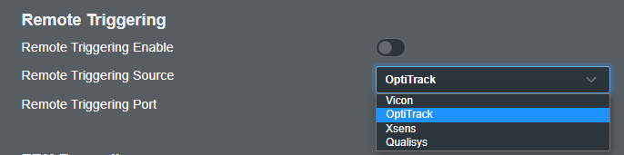
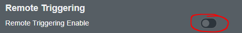
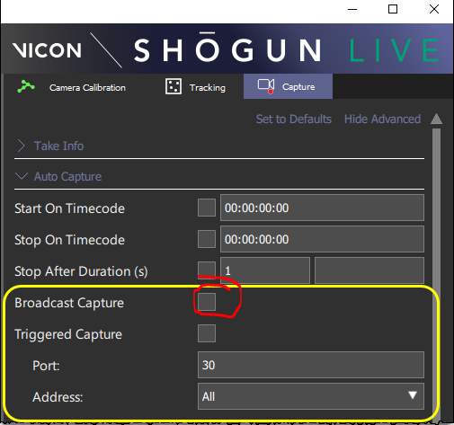
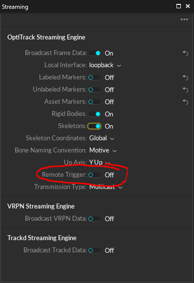
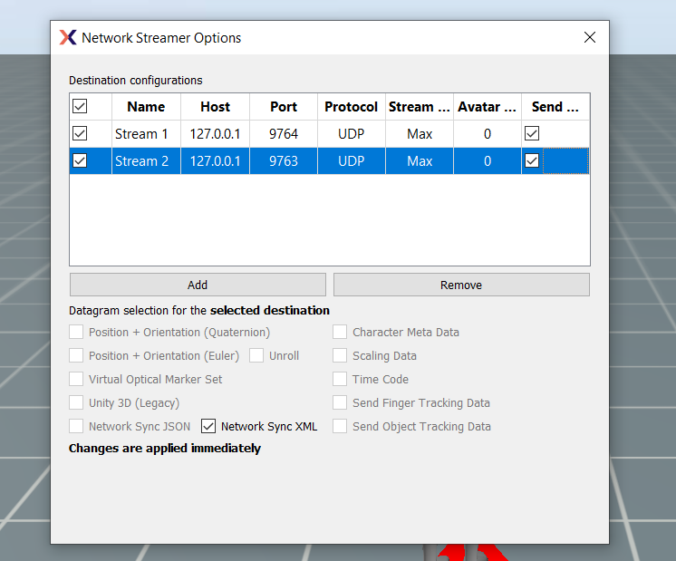

Setting Up Remote Trigger
You have the option to set up a remote recording trigger from the following systems:
- Qualisys
- Vicon
- OptiTrack
- Xsens
Configuring a remote UDP trigger enables Hand Engine to initiate and end recordings, as well as define the take name for the recorded sessions.
Hand Engine Settings
- Please open the Settings window (Windows -> Settings) from the top left menu.
- Within the settings window, you will find the Remote Triggering Settings.
- Please select your Remote Triggering Source (Vicon, OptiTrack, Xsens or Qualisys)

- The default ports have already been set up, if your remote trigger port is different, please adjust.
- Turn on the Remote Triggering Enable switch.

- Click on Update Settings.
NOTE:
Recording start and stop commands are received by Hand Engine via XML messages. When triggering via XML messages, the Remote Trigger setting under Settings → Preferences → Remote Trigger must be set to ON. For Hand Engine to receive the packets, the XML messages must be sent via the triggering UDP port selected. Lastly, the XML messages must exactly follow the appropriate syntax:
XML syntax for the start/stop trigger packet
<?xml version="1.0" encoding="UTF-8" standalone="no" ?>
<CaptureStart>
<Name VALUE="RemoteTriggerTest_take01"/>
</CaptureStart>
<?xml version="1.0" encoding="utf-8"?>
<CaptureStop>
<Name VALUE="TakeName" />
</CaptureStop>
Qualisys
The default UDP port for remote trigger is:
Qualisys: 8989
Vicon Settings
- Within the capture settings in Shogun, please select the broadcast capture check box.

- Take note of the port number. By default, this should be port 30.
- Within Hand Engine, ensure you have selected Vicon as the remote triggering source within the settings window.
OptiTrack Settings
Note: If you are triggering Hand Engine on another PC on the network, the local Interface needs to be set to the IP address of the network adapter Motive is transmitting data. To obtain this open a command prompt window and enter "ipconfig" to check the IP address of the local adapter.
If you are running Hand Engine on the same PC, Set local interface to loopback.
- In Motive 2.3.X, Please open the Data Streaming pane. This can be accessed under the View tab or by clicking
 icon on the main toolbar.
icon on the main toolbar.
- In Motive 3.0.X this is located in the Edit -> Settings option.
- Switch the remote trigger option on.

- Within Hand Engine, ensure you have selected OptiTrack as the remote triggering source within the settings window.
Xsens MVN
- Within MVN (2020.2 or higher), Please head to Options -> Network Streamer
- Add a stream
- In the host section, enter the IP address of the PC using Hand Engine 2.0
- Take note of the port number. The default port for Xsens is 9763. If this is not entered under the port column, please enter port 9763 here.
- Select only "Network Sync XML" as per the below image
Note: If you have a network streamer in MVN set up to stream data out to another software such as Unreal Engine, please make sure to set this to a port other than the default 9763. Remote Trigger and Streaming cannot operate on the same port.

Within Hand Engine, ensure you have selected Xsens as the remote triggering source within the settings window and check that the Port number is correct.